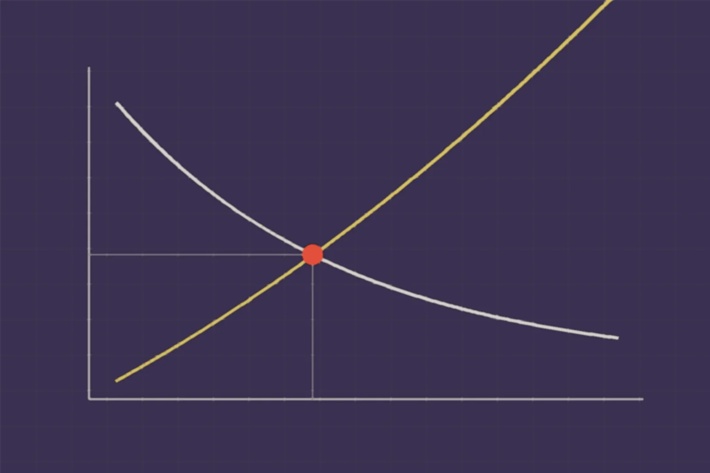

Análise de cenários
Monto três futuros possíveis para a sua decisão (o provável, o ruim e o bom) e mostro o que muda no seu caixa em cada um. Você sai com uma tabela e com a pergunta certa a fazer.
Entrega em cerca de 10 dias
Demonstração da Mil e Uma Linhas! com dados fictícios. Nenhum estudo é contratado aqui.
O número, o cenário e a dúvida, nessa ordem.
Sou economista independente em Cuiabá. Analiso cenários, planejo as finanças de empresas e de pessoas, faço estudos de viabilidade e escrevo pareceres. Logo abaixo há três ferramentas para você testar agora, sem cadastro.

Quatro tipos de trabalho. Leia o que cada um entrega e, se algum for o seu caso, peça o estudo mais abaixo.
Monto três futuros possíveis para a sua decisão (o provável, o ruim e o bom) e mostro o que muda no seu caixa em cada um. Você sai com uma tabela e com a pergunta certa a fazer.
Entrega em cerca de 10 dias
Para empresas e para pessoas: quanto entra, quanto sai, quanto sobra e para onde a sobra deve ir. O plano cabe em uma página e tem metas que dá para acompanhar mês a mês.
Entrega em cerca de 15 dias
Antes de abrir a filial, comprar a máquina ou lançar o produto, eu respondo: dá para pagar a conta, em quanto tempo volta o dinheiro e qual preço mínimo segura o projeto de pé.
Entrega em cerca de 20 dias
Um documento assinado que explica, com números e fontes, o impacto econômico de um fato, para apresentar a sócios, bancos, conselhos ou à Justiça. Linguagem direta, sem juridiquês e sem economês.
Entrega em cerca de 12 dias
Preencha os cinco campos e veja duas linhas: o saldo em reais futuros (nominal) e o mesmo saldo em reais de hoje (real, já descontada a inflação).
| Ano | Guardado | Nominal | Em reais de hoje |
|---|
Isto é uma simulação, não uma recomendação de investimento. A taxa e a inflação são suposições suas, constantes e sem imposto nem taxa de corretora. A vida real oscila. Para decidir onde aplicar, converse com um profissional habilitado.
Informe o financiamento e compare as duas tabelas: a Price tem parcela fixa; no SAC a parcela começa maior e cai todo mês.
| Mês | Parcela Price | Saldo Price | Parcela SAC | Saldo SAC |
|---|
Simulação sem seguro, taxas e correção monetária. Bancos cobram itens extras que mudam a parcela. Use a comparação para entender o formato de cada tabela, não para fechar contrato. O SAC paga menos juros no total; a Price começa com parcela menor, o que pode ajudar quem tem pouca folga hoje.
Escolha uma linha do quadro e um período para ver como ela andou. Os números são inventados para esta demonstração: não são do IBGE, do Banco Central nem de ninguém.
Dados fictícios. Gerei estas três séries com um sorteio de semente fixa só para mostrar como o painel funciona. Num trabalho real, eu usaria as fontes oficiais e citaria cada uma.
Conte o que você quer decidir e em quanto tempo. Nesta demonstração, o pedido aparece resumido na tela e não é enviado a ninguém.
Isto é só um resumo na tela. Nada foi enviado e nada ficou guardado neste navegador.
Este site é uma demonstração da Mil e Uma Linhas! para mostrar a uma economista o que um site dela pode fazer. Tudo aqui é inventado.
Você preenche os campos e a resposta aparece na hora, na própria página. O simulador faz a conta mês a mês, o comparador monta as duas tabelas de financiamento e o termômetro desenha a linha do período que você escolher. O pedido de estudo confere se tudo foi preenchido e mostra um resumo. Nada é enviado, ninguém recebe seus dados e não há cadastro.
Seu navegador faz todas as contas sozinho, com um pequeno programa escrito para este site. Os gráficos são desenhados na hora a partir dos números. As séries do termômetro foram inventadas uma vez e ficam guardadas em um arquivo do próprio site. Se você fechar a página, tudo some, porque nada fica guardado.
default-src 'self', sem script nem estilo inline, connect-src 'none', form-action 'none').js/calculos.js: juros compostos com taxa mensal equivalente (1+i)^(1/12)-1, aporte no fim do mês, desconto pela inflação mensal equivalente, Price pela fórmula PMT e SAC com amortização constante.js/graficos.js: gráficos de linha em SVG gerados pelo DOM, redesenhados quando a largura muda.js/dados.js: séries fictícias de 118 meses, semente fixa 430.localStorage nem para a rede. Testes com Playwright em tests/site.cjs.